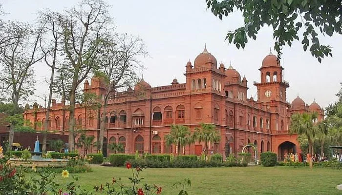
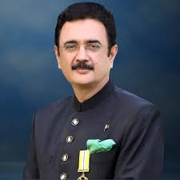

|
|
University of Punjab |
Home |
UET |
UOG |
Quaid e Azam |
About University of Punjab:The University of the Punjab (PU), established in 1882 in Lahore, is the oldest and largest public sector university in Pakistan. It was the fourth university to be established by the British colonial authorities in the Indian subcontinent and remains a cornerstone of higher education in the country.The university is primarily divided into two main campuses in Lahore: the historic Allama Iqbal Campus (Old Campus) with its iconic British-Raj architecture, and the sprawling, modern Quaid-i-Azam Campus (New Campus) located along the Canal Bank. |
 |
|
VICE CHANCELOR:PPROF. DR. MUHAMMAD ALI |
VC'S MESSAGE:"As the oldest and largest seat of higher learning in Pakistan, the University of the Punjab is dedicated to excellence in research, innovation, and character building. Our mission is to provide an environment based on merit and justice, where students from all backgrounds can thrive and contribute to the nation's progress. We are committed to elevating our global academic standing while preserving our rich historical legacy. I welcome you to join our community and become part of a tradition that has shaped the intellectual landscape of this region for over 140 years." |
ABOUT VC:Prof. Dr. Muhammad Ali is the current Vice Chancellor of the University of the Punjab, having been appointed to the role in October 2024. A distinguished academician with a PhD in Zoology from Aberystwyth University, UK, he previously served as the Vice Chancellor of Quaid-i-Azam University and the Government Sadiq College Women University, Bahawalpur. His leadership at PU has focused on academic excellence, merit-based policies, and fostering a culture of tolerance and innovation among students. In recognition of his significant contributions to higher education and research in Pakistan, he has been honored with both the Tamgha-i-Imtiaz and the Sitara-i-Imtiaz. |
Programs Offered: |
|||
|
Computing
Faculty of computing.
|
Engineering
Faculty of Engineering
|
management
Faculty of management sciences.
|
Arts
Faculty of Arts.
|
| Contact info: | |||
| University of Punjab | Quaid-i-Azam Campus, Canal Bank Road, Lahore, Pakistan. | Phone (Exchange): +92 (42) 99231102 | Email:registrar@pu.edu.pk |